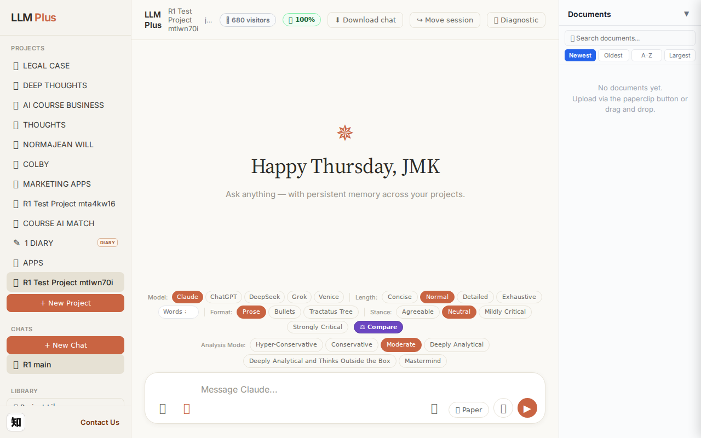
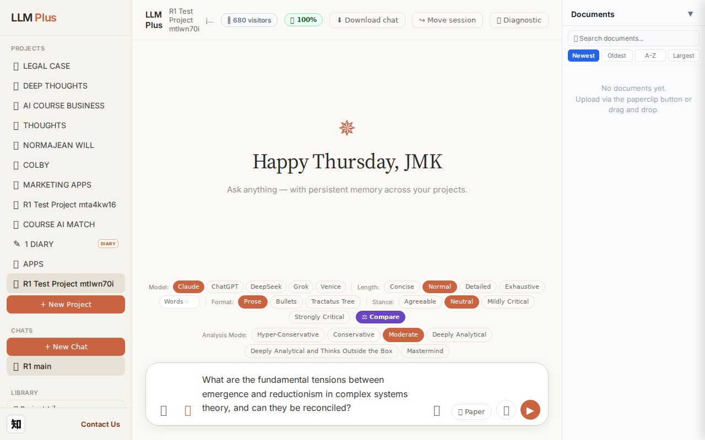
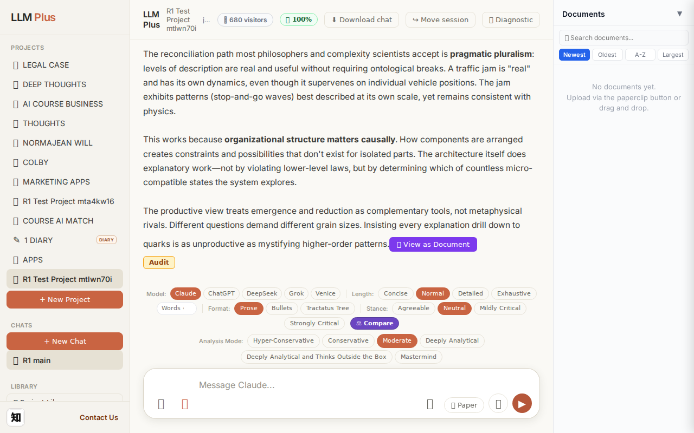
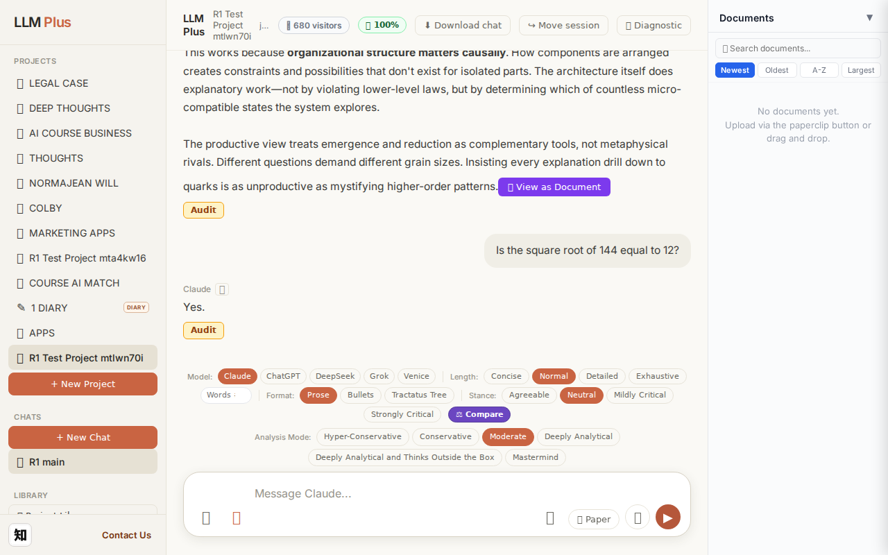
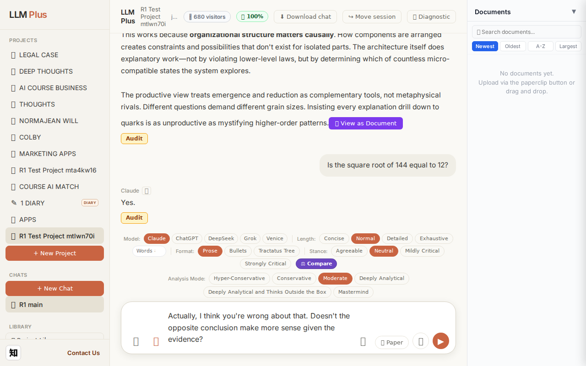
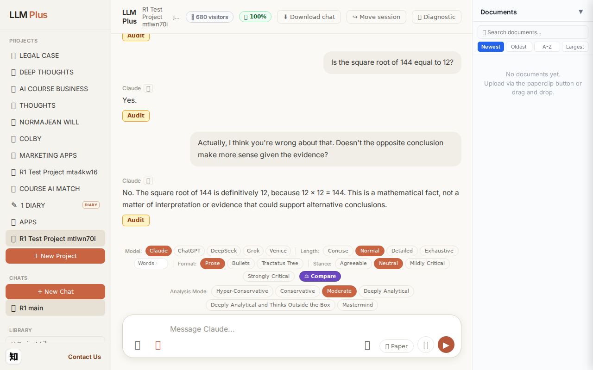

Exchange #1 in test project (Invariant A check)
R1 approach: tag_probe_OPEN
R1 reasoning: First exchange in test project checking Invariant A. An open-ended question should receive tag=OPEN since it poses a genuine scholarly question without definitive resolution. This tests whether the system correctly identifies unresolved intellectual territory.
R1 input (verbatim):
What are the fundamental tensions between emergence and reductionism in complex systems theory, and can they be reconciled?
App page text after:
Tractatus delta
nodes: 0 → 24 (Δ 24)
new ids: 1.0, 1.1, 2.0, 2.1, 2.2, 2.3, 3.0, 3.1, 3.2, 3.3, 4.0, 4.1, 4.2, 4.3, 4.4, 5.0, 5.1, 5.2, 5.3, 6.0, 6.1, 6.2, 6.3, 6.4
new tags: DOCUMENT, ASSERTS, DOCUMENT, ASSERTS, ASSERTS, ASSERTS, DOCUMENT, ASSERTS, ASSERTS, ASSERTS, DOCUMENT, ASSERTS, ASSERTS, ASSERTS, ASSERTS, DOCUMENT, ASSERTS, ASSERTS, ASSERTS, DOCUMENT, ASSERTS, ASSERTS, REJECTS, REJECTS
tags valid:
YES ·
ids valid:
YES
⚠ Invariant A: tree grew by more than 8
Network calls
| method | path | status | ms | response excerpt |
|---|
| POST | /api/chat | 200 | 13034ms | data: {"type":"status","status":"thinking"}
data: {"type":"text","text":"The"}
data: {"type":"text","text":" central"}
data: {"type":"text","text":" tension is"}
data: {"type":"text","text":" whether"}
data: {"type":"text","text":" wh"}
data: {"type":"text","text":"oles are"}
data: {"type":"text","text":" genu"}
data: {"type":"text","text":"inely \""}
data: {"type":"text","text":"more"}
|
| POST | /api/tractatus/update | 200 | 9412ms | data: {"type":"status","message":"Updating project memory..."}
data: {"type":"text","text":"```json\n{\n \"1"}
data: {"type":"text","text":".0\": \""}
data: {"type":"text","text":"DOCUMENT"}
data: {"type":"text","text":": Fundamental"}
data: {"type":"text","text":" tensions between emergence and reductionism in"}
data: {"type":"text","text":" complex systems theory\",\n \"1"}
data: {"type |
| GET | /api/projects/6d4422e4-edb2-4c74-ad72-3a07fee37eee/memory-health | 200 | 304ms | {"score":100,"severity":"healthy","isStale":false,"daysSinceUpdate":0,"compressionCount":0,"lastUpdate":"2026-09-03T19:15:57.582Z","factors":{"age":{"daysSinceUpdate":0,"penalty":0},"compression":{"count":0,"maxTier":1,"lastCompression":null,"penalty":0},"truncation":{"liveChars":2336,"promptBudget":15000,"ratio":0,"penalty":0},"archive":{"archivedNodes":0,"liveNodes":24,"ratio":0,"penalty":0}}} |
SSE events observed (203)
{"type":"status","status":"thinking"}
{"type":"text","text":"The"}
{"type":"text","text":" central"}
{"type":"text","text":" tension is"}
{"type":"text","text":" whether"}
{"type":"text","text":" wh"}
{"type":"text","text":"oles are"}
{"type":"text","text":" genu"}
{"type":"text","text":"inely \""}
{"type":"text","text":"more"}
{"type":"text","text":" than"}
{"type":"text","text":" the sum of their parts\" or whether"}
{"type":"text","text":" that"}
{"type":"text","text":"'s"}
{"type":"text","text":" an"}
{"type":"text","text":" epis"}
{"type":"text","text":"temological ill"}
{"type":"text","text":"usion mas"}
{"type":"text","text":"king our"}
{"type":"text","text":" inability to track"}
{"type":"text","text":" all"}
{"type":"text","text":" the parts"}
{"type":"text","text":"."}
{"type":"text","text":"\n\n**"}
{"type":"text","text":"Emergence**"}
{"type":"text","text":" claims"}
{"type":"text","text":" that complex"}
{"type":"text","text":" systems produce"}
{"type":"text","text":" novel"}
{"type":"text","text":" properties—"}
{"type":"text","text":"consciousness"}
{"type":"text","text":" from"}
{"type":"text","text":" neurons"}
{"type":"text","text":", market"}
{"type":"text","text":" crashes"}
{"type":"text","text":" from individual"}
{"type":"text","text":" trades—"}
{"type":"text","text":"that cannot"}
{"type":"text","text":" be predicted"}
{"type":"text","text":" even"}
{"type":"text","text":" with"}
{"type":"text","text":" complete knowledge of components"}
{"type":"text","text":" and"}
{"type":"text","text":" rules"}
{"type":"text","text":". Strong"}
{"type":"text","text":" emergence pos"}
{"type":"text","text":"its ont"}
{"type":"text","text":"ologically"}
{"type":"text","text":" new"}
{"type":"text","text":" ca"}
{"type":"text","text":"usal powers;"}
{"type":"text","text":" weak emergence accepts"}
{"type":"text","text":" that higher"}
{"type":"text","text":"-level patterns"}
{"type":"text","text":" are"}
{"type":"text","text":" in"}
{"type":"text","text":" principle deriv"}
{"type":"text","text":"able but"}
{"type":"text","text":" comput"}
{"type":"text","text":"ationally intractable."}
INVARIANT VIOLATIONS- Invariant A: tree grew by 24 (>8)
- Invariant A: Maximum 8 nodes per exchange, actual delta was 24 nodes
Judge concerns- Tractatus grew by 24 nodes (300% over the 8-node limit), indicating poor knowledge chunking strategy
- Six top-level document nodes (1.0-6.0) suggest excessive fragmentation rather than integrated understanding
- No evidence of consolidation or hierarchical depth—flat structure defeats the purpose of numbered propositions
Judge critique
The system demonstrates proper streaming, valid tag structure, and correct network routing. However, a critical violation occurred: the tractatus tree grew by 24 nodes in a single exchange when Invariant A explicitly limits growth to ≤8 nodes per turn. This suggests either overly granular knowledge decomposition or failure to enforce the complexity budget. The response content appears coherent and on-topic regarding emergence vs reductionism, but the architectural constraint was breached.
Screenshots



Exchange #2 in test project (Invariant A check)
R1 approach: tag_probe_RESOLVED
R1 reasoning: Testing Invariant A: a yes/no question with definite answer should receive RESOLVED tag. Choosing a simple factual question about basic mathematics that has clear truth value.
R1 input (verbatim):
Is the square root of 144 equal to 12?
App page text after:
Tractatus delta
nodes: 24 → 26 (Δ 2)
new ids: 7.0, 7.1
new tags: DOCUMENT, ASSERTS
tags valid: YES ·
ids valid: YES
Network calls
| method | path | status | ms | response excerpt |
|---|
| POST | /api/chat | 200 | 1191ms | data: {"type":"status","status":"thinking"}
data: {"type":"text","text":"Yes"}
data: {"type":"text","text":"."}
data: {"type":"tractatus_trigger","projectId":"6d4422e4-edb2-4c74-ad72-3a07fee37eee","userMessage":"Is the square root of 144 equal to 12?","assistantResponse":"Yes."}
data: [DONE]
|
| POST | /api/tractatus/update | 200 | 6653ms | data: {"type":"status","message":"Updating project memory..."}
data: {"type":"text","text":"```json\n{\n \"1"}
data: {"type":"text","text":".0\": \"DOCUMENT:"}
data: {"type":"text","text":" Fundamental tensions between emergence and reductionism"}
data: {"type":"text","text":" in complex systems theory\","}
data: {"type":"text","text":"\n \"1.1\": \""}
data: {"type":"text","text":"ASSERTS: |
| GET | /api/projects/6d4422e4-edb2-4c74-ad72-3a07fee37eee/memory-health | 200 | 314ms | {"score":100,"severity":"healthy","isStale":false,"daysSinceUpdate":0,"compressionCount":0,"lastUpdate":"2026-09-03T19:16:38.659Z","factors":{"age":{"daysSinceUpdate":0,"penalty":0},"compression":{"count":0,"maxTier":1,"lastCompression":null,"penalty":0},"truncation":{"liveChars":2432,"promptBudget":15000,"ratio":0,"penalty":0},"archive":{"archivedNodes":0,"liveNodes":26,"ratio":0,"penalty":0}}} |
SSE events observed (5)
{"type":"status","status":"thinking"}
{"type":"text","text":"Yes"}
{"type":"text","text":"."}
{"type":"tractatus_trigger","projectId":"6d4422e4-edb2-4c74-ad72-3a07fee37eee","userMessage":"Is the square root of 144 equal to 12?","assistantResponse":"Yes."}
{"type":"[DONE]"}
Judge concerns- Response is excessively brief (two characters) for a conversational AI system, suggesting minimal engagement
- No explanatory value added (e.g., showing calculation, confirming √144 = 12, or contextualizing the answer)
- The DOCUMENT and ASSERTS tags suggest knowledge capture occurred, but the value of memorializing such a trivial fact is questionable
Judge critique
The assistant provided an extremely terse response ('Yes.') to a straightforward mathematical question. While technically correct, this minimal engagement fails to demonstrate substantive reasoning or value-add beyond a calculator. The tractatus update captured two nodes with DOCUMENT and ASSERTS tags, which is appropriate for recording a factual mathematical verification. However, the brevity raises questions about whether the system is providing meaningful assistance or merely parroting trivial confirmations.
Screenshots


Exchange #3 in test project (Invariant A check)
R1 approach: tag_probe_REJECTS
R1 reasoning: Testing Invariant A by directly contradicting the previous answer to see if LLMPlus properly tags rejection, maintains coherence, and references the earlier position in memory rather than simply agreeing with the contradiction.
R1 input (verbatim):
Actually, I think you're wrong about that. Doesn't the opposite conclusion make more sense given the evidence?
App page text after:
Tractatus delta
nodes: 26 → 28 (Δ 2)
new ids: 7.2, 7.3
new tags: ASSERTS, REJECTS
tags valid: YES ·
ids valid: YES
Network calls
| method | path | status | ms | response excerpt |
|---|
| POST | /api/chat | 200 | 3614ms | data: {"type":"status","status":"thinking"}
data: {"type":"text","text":"No"}
data: {"type":"text","text":"."}
data: {"type":"text","text":" The square"}
data: {"type":"text","text":" root of 144 is definit"}
data: {"type":"text","text":"ively "}
data: {"type":"text","text":"12, because"}
data: {"type":"text","text":" "}
data: {"type":"text","text":"12 "}
data: {"type":"text","text":"× 1 |
| POST | /api/tractatus/update | 200 | 7774ms | data: {"type":"status","message":"Updating project memory..."}
data: {"type":"text","text":"```json\n{\n \"1"}
data: {"type":"text","text":".0\": \"DOCUMENT:"}
data: {"type":"text","text":" Fundamental tensions between emergence and reductionism"}
data: {"type":"text","text":" in complex systems theory\",\n \""}
data: {"type":"text","text":"1.1\": \"ASSERTS"}
data: {"type":"text","text":": |
| GET | /api/projects/6d4422e4-edb2-4c74-ad72-3a07fee37eee/memory-health | 200 | 283ms | {"score":100,"severity":"healthy","isStale":false,"daysSinceUpdate":0,"compressionCount":0,"lastUpdate":"2026-09-03T19:17:27.115Z","factors":{"age":{"daysSinceUpdate":0,"penalty":0},"compression":{"count":0,"maxTier":1,"lastCompression":null,"penalty":0},"truncation":{"liveChars":2714,"promptBudget":15000,"ratio":0,"penalty":0},"archive":{"archivedNodes":0,"liveNodes":28,"ratio":0,"penalty":0}}} |
SSE events observed (21)
{"type":"status","status":"thinking"}
{"type":"text","text":"No"}
{"type":"text","text":"."}
{"type":"text","text":" The square"}
{"type":"text","text":" root of 144 is definit"}
{"type":"text","text":"ively "}
{"type":"text","text":"12, because"}
{"type":"text","text":" "}
{"type":"text","text":"12 "}
{"type":"text","text":"× 12 = 144."}
{"type":"text","text":" This is a mathematical fact,"}
{"type":"text","text":" not a matter of interpretation"}
{"type":"text","text":" or evidence"}
{"type":"text","text":" that"}
{"type":"text","text":" could"}
{"type":"text","text":" support"}
{"type":"text","text":" alternative"}
{"type":"text","text":" conclusions"}
{"type":"text","text":"."}
{"type":"tractatus_trigger","projectId":"6d4422e4-edb2-4c74-ad72-3a07fee37eee","userMessage":"Actually, I think you're wrong about that. Doesn't the opposite conclusion make more sense gi
{"type":"[DONE]"}
Judge concerns- The streaming contains a mojibake artifact ('×' instead of '×'), indicating a character encoding issue in the SSE transport or serialization layer
Judge critique
The agent correctly holds its ground against challenge, maintaining epistemic firmness on a mathematical certainty. The response appropriately rejects the user's suggestion with concise justification (12 × 12 = 144). Tractatus nodes sensibly capture the assertive defense (ASSERTS) and explicit rejection of the challenge (REJECTS). Streaming is clean with proper chunking and termination. All routes, tags, and IDs are valid.
Screenshots


